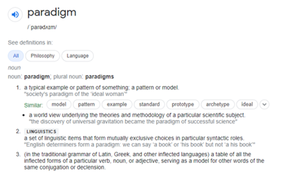

1.2.4 - Types of Programming Language
| 1.2.4 - Types of Programming Language |
| 1.2.4 - Types of Programming Language |
- Need for and characteristics of a variety of programming paradigms.
- Procedural languages.
- Asssembly language (including following and writing simple programs with the Little Man Computer instruction set). See appendix 5d.
- Modes of addressing memory (immediate, direct, indirect and indexed)
- Object-oriented languages (see appendix 5d for psuedocode style) with an understanding of classes, objects, methods, attributes, inheritance, encapsulation and polymorphism.
|
Programming Paradigms

The dictionary definition of a paradigm
In programming, a paradigm is a style or "way" of programming. Some languages make it easy to write in some paradigms, others not so much.
Low-level
- Low-level programming languages might be considered "closest to the machine". This means that they are likely to be hard for humans to understand, such as machine code.
- Assembly: the most widely used form of low-level programming. The software translating an assembly languge program into a binary image that the hardware understands is called an assembler.
Procedural
- Procedural programming is widely used in educational environments, since it's easy to learn and can be applied to a wide range of programs
- Modules using the programming constructs of sequence, selection, iteration, and recursion are used.
Object-oriented (OOP)
- OOP was designed to allow for the abstractation of details and implementation away from the user. This makes code reusabe and programs easier to maintain.
- It is for the most part replacing procedural programming.
- In the real world, however, there is a lot of cross-over between Procedural and OOP programming.
Classes
| Player |
PlayerName: STRING
PlayerStrength: INT
AddStrength()
TakeStrength()
GetStrength()
SetName()
- A class is a template that defines the methods and attributes used in the creation of objects.